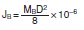

Servomotors / Servo Drivers
Servomotors and Servo Drivers are provided for the purpose from replacing stepping motors to high-speed, high-precision control. Models with MECHATROLINK II communications are also provided. Concerning Servomotors/Servo Drivers, OMRON offers different products in different areas. So please click on the banner "Products links" in the top right corner to reach the country website nearest you.
|
|
Features |
| Principles | Classifications |
| Engineering Data | Further Information |
|
|
Troubleshooting |
Related Contents
- Servomotors / Servo Drivers
Servomotor Selection Flow Chart
Formulas
Formulas for Operating Patterns
Inertia Formulas
Load Torque Formulas
Acceleration/Deceleration Torque Formula
Calculation of Maximum Momentary Torque, Effective Torque
Positioning Accuracy
Straight Line Speed and Motor Rotation Speed
Sample Calculations
1. Machinery Selection
2. Determining Operating Pattern
3. Calculation of Motor Shaft Conversion Load Inertia
| Ball screw Inertia JB |  | |
| Load Inertia JW | ||
| Motor Shaft Conversion Load Inertia JL |
4. Load Torque Calculation
| Torque against Friction Torque TW | ||
| Motor Shaft Conversion Load Torque TL |  |
5. Calculation of Rotation Speed
| Rotations N |
6. Motor Temporary Selection [In case OMNUC U Series Servomotor is temporarily selected
The Rotor/Inertia of the
selected Servomotor is
more than 1/30* of a load80% of the Rated Torque
of the selected
Servomotor is more than
the load torque of the
Servomotor shaft
conversion value
* Note that this value changes according to the Series.
7. Calculation of Acceleration/Deceleration Torque
| Acceleration/ Deceleration Torque TA |
8. Calculation of Maximum Momentary Torque, Effective Torque
9. Result of Examination
Note: This example omits calculations for the regenerative energy, operating conditions, or positioner characteristics.
Maintenance
Servomotors and Servo Drives contain many components and will operate properly only when each of the individual components is operating properly.
Some of the electrical and mechanical components require maintenance depending on application conditions. In order to ensure proper long-term operation of Servomotors and Drives, periodic inspection and part replacement is required according to the life of the components.
(From the "Recommendations for Periodic Inspection of Inverters", published by JEMA)
The periodic maintenance cycle depends on the installation environment and application conditions of the Servomotor or Servo Drive. Recommended maintenance times are listed below for Servomotors and Servo Drives. Use these for reference in determining actual maintenance schedules.
For Servomotors and Servo Drives maintenance, please check the "User Manual (Chapter on Periodic Maintenance)" for each Series.
Servo Drive (including Power Supply unit and Regeneration Resistor)
Among the components used in the Servo Drive, aluminum analytical capacitors and Axle fans in particular require periodic maintenance.
The life of aluminum analytical capacitors is greatly affected by the ambient operating temperature and the load conditions of Servomotor operation.
Generally speaking, an increase of 10℃ in the ambient operating temperature will reduce capacitor life by 50%.
Recommended maintenance times are listed below for each of the Series.
OMNUC G5 Series
Aluminum analytical capacitors......28,000 hours
(Ambient operating temperature 55℃, output of the rated operation [rated torque])
Axle fan......10,000 to 30,000 hours
(At an ambient Servo Drive operating temperature of 40℃ or below)
Smart Step 2 Series
Aluminum analytical capacitors......50,000 hours
(Ambient operating temperature 40℃, 80% output of the rated operation [rated torque])
Axle fan......30,000 hours
(At an ambient Servo Drive operating temperature of 40℃ and an ambient humidity of 65%)
OMNUC G Series
Aluminum analytical capacitors......28,000 hours
(Ambient operating temperature 55℃, output of the rated operation [rated torque])
Axle fan......10,000 to 30,000 hours
(At an ambient Servo Drive operating temperature of 40℃ or below)
Please follow the instructions in the user manual for installation.
We recommend that ambient operating temperature and the power ON time be reduced as much as possible to lengthen the maintenance intervals for Servo Drives.
If the Servomotor or Servo Drive is not to be used for a long time, or if they are to be used under conditions worse than those described above, a periodic inspection schedule of five years is recommended.
Please consult with OMRON to determine whether or not components need to be replaced.
Servomotor
Among the components used by the Servomotor, Aluminum Analytical Capacitors, Bearings, Oil seal and Brush require periodic maintenance. Their life will depend on such factors as the number of rotations used for, the temperature, and the load on bearings. Recommended maintenance times are listed below for each of the Series.
OMNUC G5 Series
Bearings ..........................20,000 hours
Oil Seals ..........................5,000 hours
Smart Step 2 Series
Bearings ..........................20,000 hours
Oil Seals ..........................5,000 hours
OMNUC G Series
Bearings ..........................20,000 hours
Oil Seals ..........................5,000 hours
Application Conditions: Ambient Servomotor operating temperature of 40℃, within allowable shaft load, rated operation (rated torque and r/min), installed as described in operation manual.